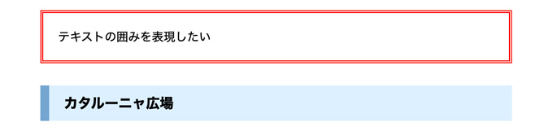
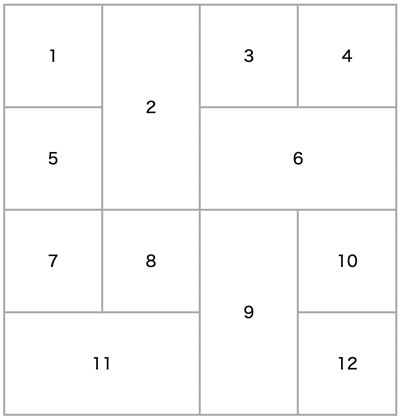

文字の囲み

- borderを使用して、要素に枠線をつける
- borderプロパティの値を指定する
セレクタ {
boder: 線の太さ, 線の種類, 線の色 ;
}
上下左右の枠線を個別に指定する
- 「border」と記述することにより、上→右→下→左をショートハンドで記述したことになります
| プロパティー | 意味 |
|---|---|
| border-top | 要素の上の線 |
| border-right | 要素の右の線 |
| border-bottom | 要素の下の線 |
| border-left | 要素の左の線 |
線の種類
- double（二重線）は、3px以上が必要
| キーワード | 形状 |
|---|---|
| dotted | 点線で表示する |
| dashed | 破線で表示する |
| solid | 実線で表示する |
| double | 二重線で表示する |
| groove | 線が窪んで見えるような線で表示する |
| ridge | 線が突起して見えるような線で表示する |
| inset | 領域全体が窪んで見えるような線で表示する |
| outset | 領域全体が突起して見えるような線で表示する |
| none | 線をなしにする |
| hidden | 線の非表示 |
- 文字と囲みとの空きは、paddingプロパティの値を指定する

作例
- div要素で幅を指定するレイアウト
- border で見出しを修飾
<div class="text-block"> <p>テキストの囲みを表現したい</p> <h3>カタルーニャ広場</h3> </div><!-- /.text-block -->
.text-block { width: 640px; margin: 50px auto; } p { margin-bottom: 30px; padding: 20px; border: 4px double #f00; /* 線種 solid、dotted、dashed、double */ } h3 { padding: 10px 10px 10px 20px; background-color: #dcefff; border-left: 12px solid #74a6d1; }

表に枠線をつける
- table要素に枠線を付ける場合は、borderプロパティを「table, th, td」要素それぞれに記述します
表に重ねた枠線をつける
- table要素に対してborder-collapseプロパティの値を「collapse」と指定すると、重ねて表示されます
- 初期値は「separate」

コラプシング【collapsing】
<!DOCTYPE html> <html lang="ja"> <head> <meta charset="UTF-8"> <title>枠線と表組 -CSS-</title> <style> table,td { border: 2px solid #aaa; border-collapse: collapse; text-align: center; } table { width: 400px; } td { width: 100px; line-height: 100px; } </style> </head> <body> <table> <tr><td>1</td><td rowspan="2">2</td><td>3</td><td>4</td></tr> <tr><td>5</td><td colspan="2">6</td></tr> <tr><td>7</td><td>8</td><td rowspan="2">9</td><td>10</td></tr> <tr><td colspan="2">11</td><td>12</td></tr> </table> </body> </html> </html>
